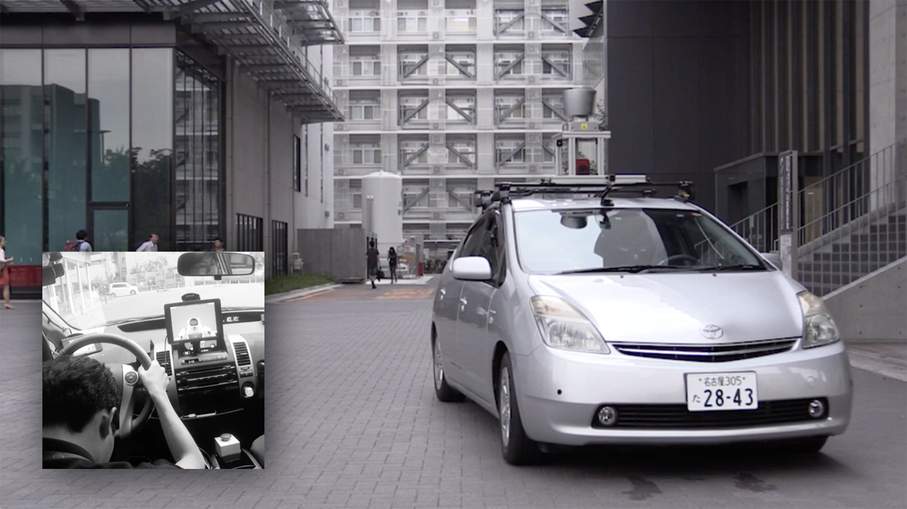

Automated Safety Vehicle Stop System for Cardiac Emergencies

Cardiovascular disease (CVD) is a significant risk factor for driving. The pain of cardiac events distracts the driver's concentration, and the ischemia caused by CVD leads to inability to drive. In this study, a prototype of the Automated Safety Vehicle Stop System was developed. The system collects biosignals through the steering sensor and detects the driver's posture through a camera, and detects the driver's incapacity. The system takes over the maneuvering of the vehicle when the driver loses his capacity and automatically drives to a safe place by sensing the traffic environment. The system has been demonstrated in a prepared emergency scenario and its potential has been verified.
Reference
I. Takahashi, T. T. Nguyen, H. Kanamori, T. Tanaka, S. Kato, Y. Ninomiya, E. Takeuchi, T. Nakagawa, M. Makiguchi, and H. Aoki, “Automated safety vehicle stop system for cardiac emergencies,” Proceedings of the IEEE International Conference on Emerging Technologies and Innovative Business Practices for the Transformation of Societies. 2016. DOI: 10.1109/EmergiTech.2016.7737302 (Best Paper Award)